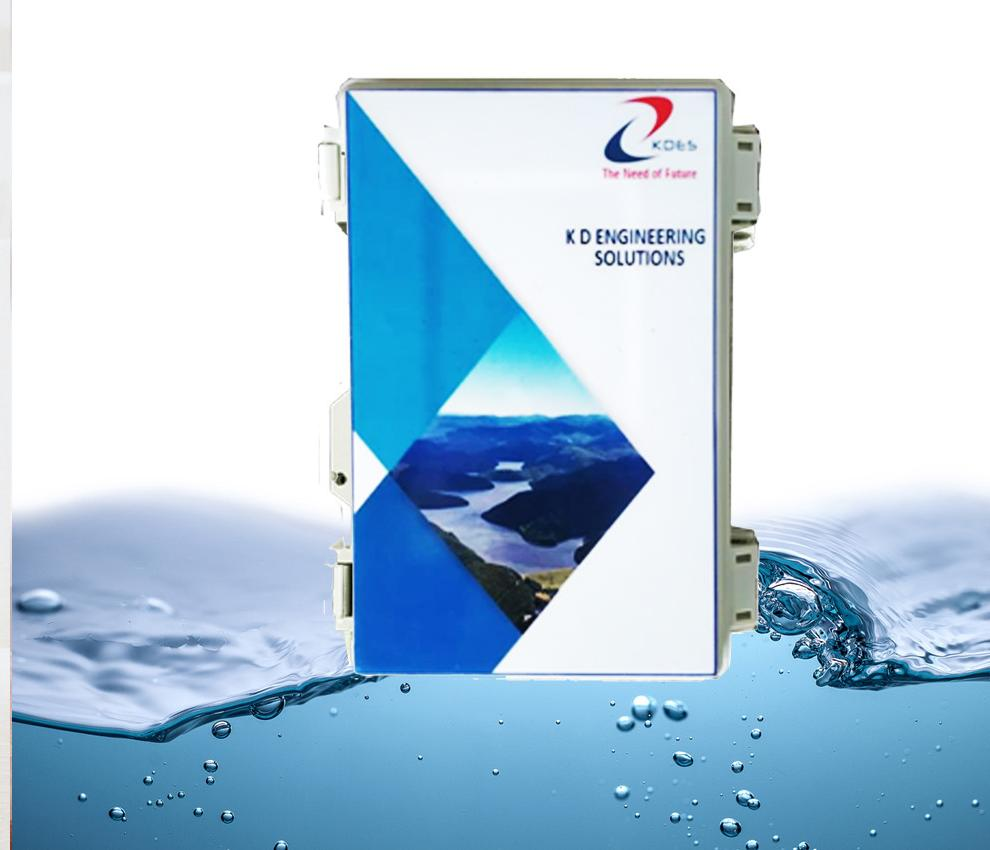
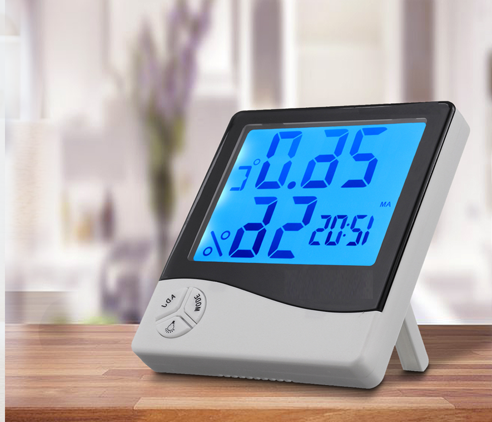
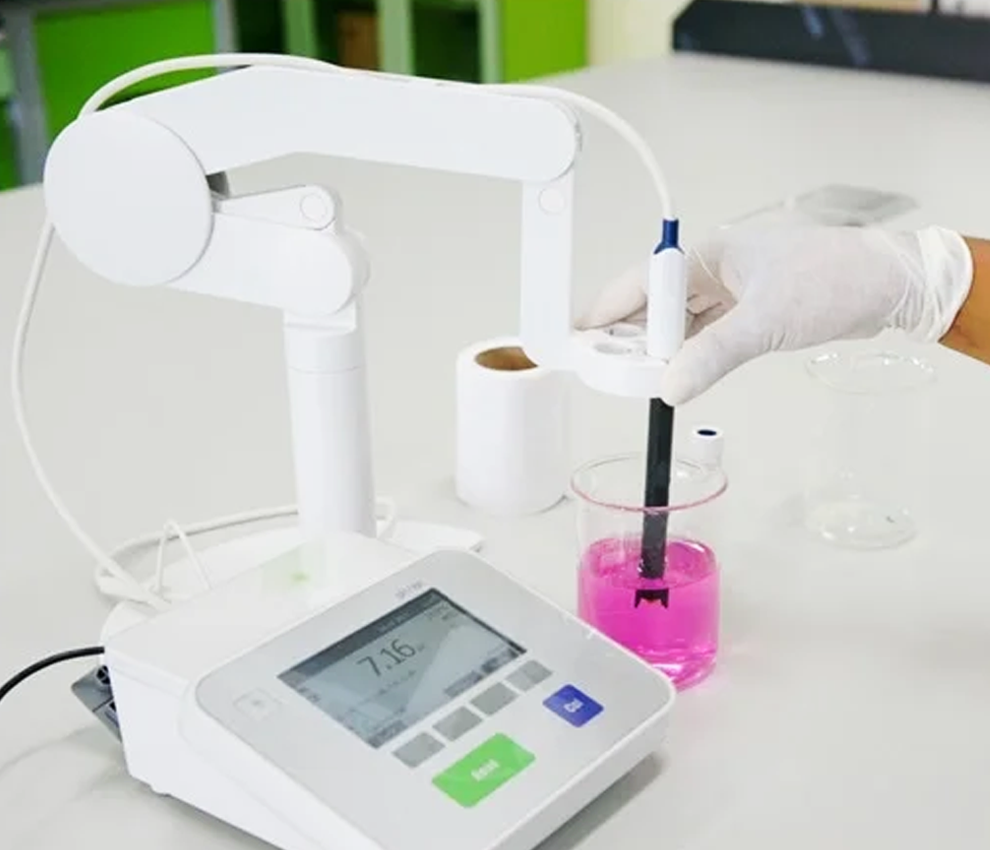
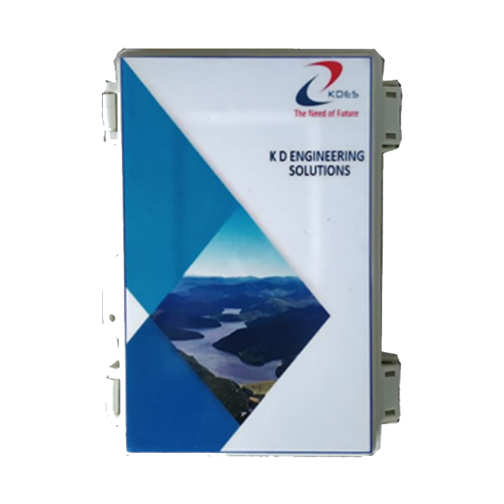
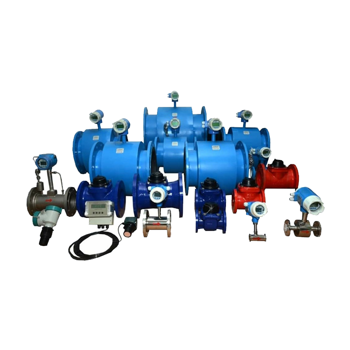
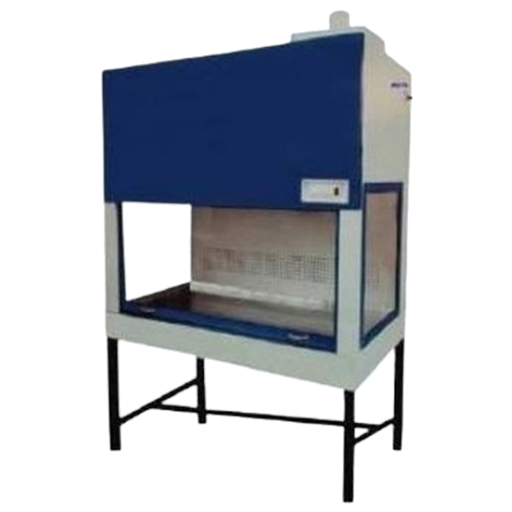
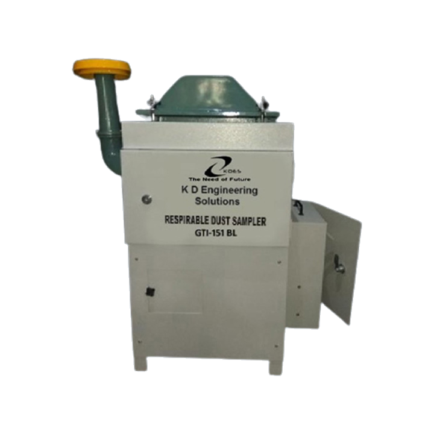
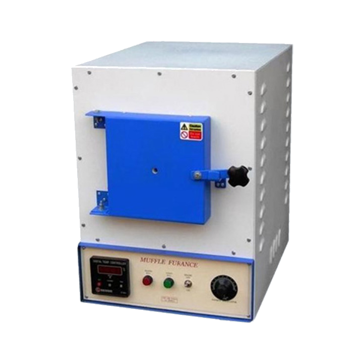

Through precision manufacturing, IoT telemetry, and rigorous metrology, we empower scientific researchers, environmental compliance officers, and industrial laboratories to measure with absolute confidence.

Real-time piezometers and RTU telemetry ensuring CGWA compliance nationwide.

Stack samplers and dust monitors meeting stringent environmental board standards.

Empowering Central India's pharmaceutical, academic, and testing facilities.
Discover how our precision equipment empowers environmental conservation, hydrological governance, and scientific discovery.

GroundwaterAutomated hydrostatic level recorder with integrated GSM telemetry for round-the-clock water table surveillance.
 Emissions
Emissions
Accurate particulate matter and gaseous sampling from industrial chimneys and environmental exhaust stacks.
 Telemetry
Telemetry
Real-Time Data Transmission Unit sending continuous flow and volume readings directly to cloud portals.
Need urgent quotes, technical datasheets, or AMC consultation? Our senior engineers respond promptly.
Engineered for stringent research, chemical compliance, and industrial field durability.
Furnaces, hot plates, biological safety cabinets, ice flaking machines, and custom lab setups.
Browse Instruments →Piezometer ground water level recorders, flow meter RTU telemetry, and automated loggers.
Browse Telemetry →Stack samplers, particulate matter monitors, and industrial emissions measuring equipment.
Browse Samplers →Portable and benchtop instrumentation for chemical analysis, drinking, and wastewater testing.
Browse Analyzers →Autoclaves, BOD incubators, and quartz distillation units built for high-throughput testing.
Browse Environmental →Laminar flow cabinets, replacement sensors, filters, glassware, and precision consumables.
Browse Spares →Precision heating mantles, hot plates, and thermal apparatus with precision calibration support.
Explore Calibration →Preventive maintenance contracts (AMC), magnetic stirrers, high-temp oil baths, and repairs.
Explore Services →View our complete manufacturer directory featuring all 25 precision models with high-res photos, datasheets, and direct quote requests.
Directly from our ISO 9001:2015 manufacturing facility — high precision, factory calibrated, and field proven.
Automated hydrostatic piezometer with telemetry for CGWA groundwater compliance and monitoring.
Isokinetic particulate matter and gaseous emissions monitor for industrial chimneys and exhausts.

High-accuracy inline electromagnetic induction flow sensor with digital output and telemetry integration.

Class II laminar airflow bio-containment workstation with 99.997% HEPA filtration and UV sterilization.

Heavy-duty ambient air sampler with brushless blower motor for PM10 monitoring compliant with CPCB standards.

Precision high-temperature laboratory heating furnace up to 1200°C with microprocessor PID controller.

Hermetically sealed low-temperature biological oxygen demand incubator with digital LED control (5°C - 60°C).
Real-Time Remote Terminal Unit telemetry sending flow data directly to central CGWA cloud portal.
From turnkey installation to ongoing annual maintenance contracts, we ensure zero downtime.
Design, sourcing, installation, and commissioning of testing laboratories tailored to educational institutions, R&D centers, and manufacturing plants.
Certified calibration with national traceability for temperature, pressure, flow, air volume, and chemical analytical sensors.
Preventive maintenance agreements, sensor recalibration, remote firmware diagnostics, and immediate spare parts dispatch.
Connect with our engineering desk for customized laboratory specifications, telemetry setups, or formal institutional quotations.